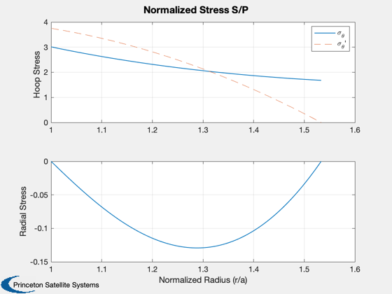
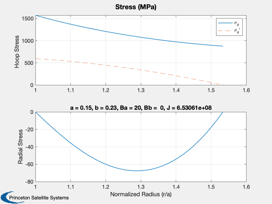

Contents
Nozzle magnet pancake design script
The alpha and beta shape parameters define the stresses and the fields at the inner magnet wall. For an infinitely long solenoid, Ba=B0 and Bb=0.
%-------------------------------------------------------------------------- % See also: Bpancake, CoilStressSolenoid, PancakeMagnetMass %-------------------------------------------------------------------------- %-------------------------------------------------------------------------- % Copyright (c) 2018 Princeton Satellite Systems, Inc. % All rights reserved. % STTR NNX17CC74P %--------------------------------------------------------------------------
Nozzle
Ri = 0.15; Ro = 0.23; N = 5*3200; Iop = 400; H = 0.1225; [BN,alphaN,betaN] = Bpancake(Iop,Ri,Ro,N,H); K = 1.5; % guess from alpha/beta BNmax = K*BN; % Stress for an infinite solenoid sigmaN = CoilStressSolenoid( Ri, Ro, true ); % Stresses for a finite solenoid - requires B at each surface and current % densty Jnz = N*Iop/((Ro-Ri)*H); sigmaN2 = CoilStressFiniteSolenoid( 0.15, 0.23, 20, 0, Jnz, true ); sigmaN2(:,1) % pressure: assume 20 T p = MagneticPressure( 1, 20 ); sigmaNMax = sigmaN(1)*p; [mass,turns] = PancakeMagnetMass( BN, Ri, 5, Iop ); fprintf('\nNozzle Magnets:\n'); fprintf('Central Field: %g T\n',BN); fprintf('Max Field: %g T\n',BNmax); fprintf('Max Hoop Stress (infinite): %g MPa\n',sigmaNMax*1e-6); fprintf('Max Hoop Stress (finite): %g MPa\n',sigmaN2(1,1)*1e-6); fprintf('Mass: %g kg, Turns per pancake: %d\n',mass,turns); %--------------------------------------
ans = 1.5738e+09 7.6797e-07 Nozzle Magnets: Central Field: 20.3788 T Max Field: 30.5683 T Max Hoop Stress (infinite): 479.457 MPa Max Hoop Stress (finite): 1573.84 MPa Mass: 91.4762 kg, Turns per pancake: 15970 